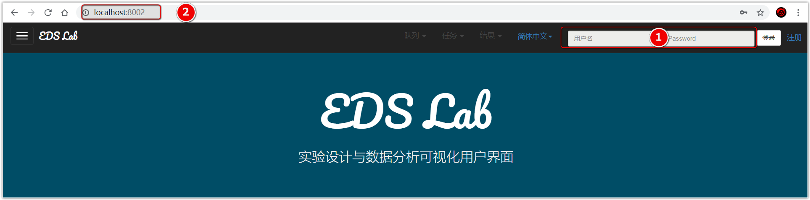
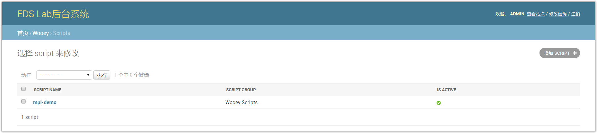

管理和运行
本项目的后台系统是基于Django的，这里已经为您创建了一个用户：
- 用户名 admin
- 密码 ADMIN12345678
你可以使用上述用户名和密码来执行相关管理工作，其中包括创建新的用户。
1.创建超级用户
超级用户即系统管理员，这里和所有django项目一样，在后台中输入createsuperuser进行管理员的创建。

2. 注册、登录后台管理系统


两种方式登录：
- 在用户界面右上角输入用户名和密码
- 或者在地址栏中输入
ip:端口号/admin，输入用户名或密码登录。
系统也支持注册新用户并登录。
3. 用户管理
如上图所示可在后台进行用户管理。
4. 脚本管理


5. 增加脚本


有两种方式来增加脚本。第一种方式通过后台来添加（不推荐，没办法添加绝对路径，checksum无法计算，从而无法添加成功）。

另外一种通过终端来添加，在终端中输入:
python manage.py addscript [path-to-script/]script.py
即addscript后接脚本的路径，出现Concerted 1 scripts表明添加成功。
特别注意： 添加的脚本中不能含有中文，包括注释中都不能有中文等其他字符。

进入后台管理系统中，发现脚本被成功添加了进来，点击进入后可以修改脚本信息（非源程序）。

查看站点，发现有新的脚本被添加进来。
6. 运行脚本


运行新脚本，结果如上图。